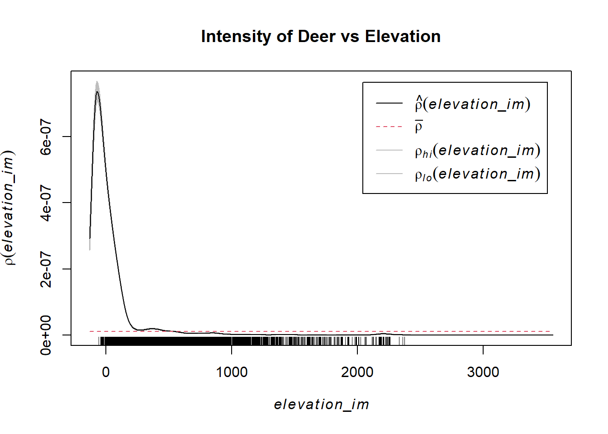
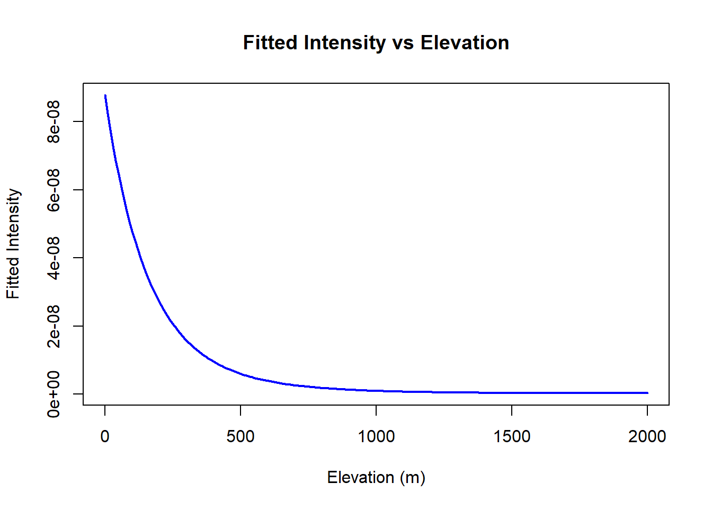
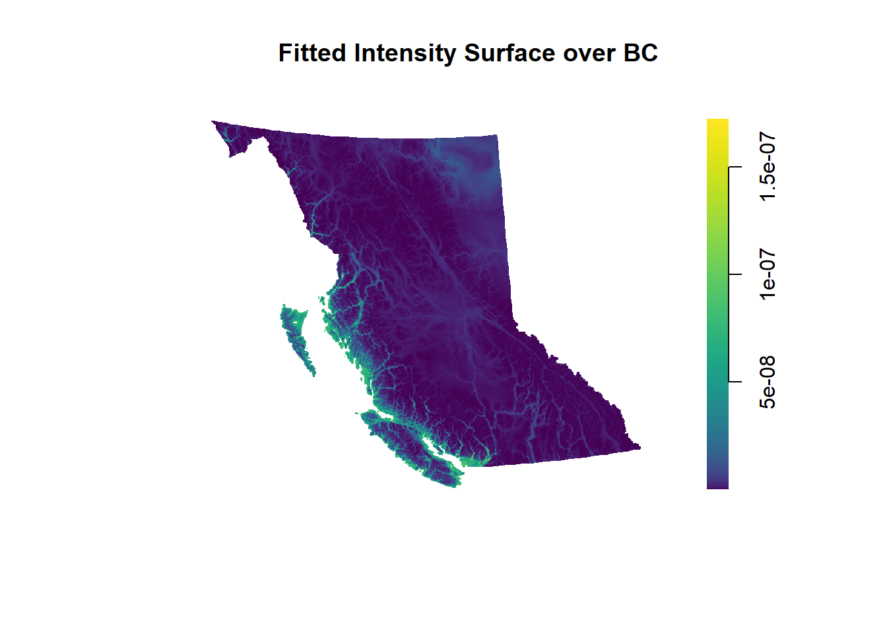
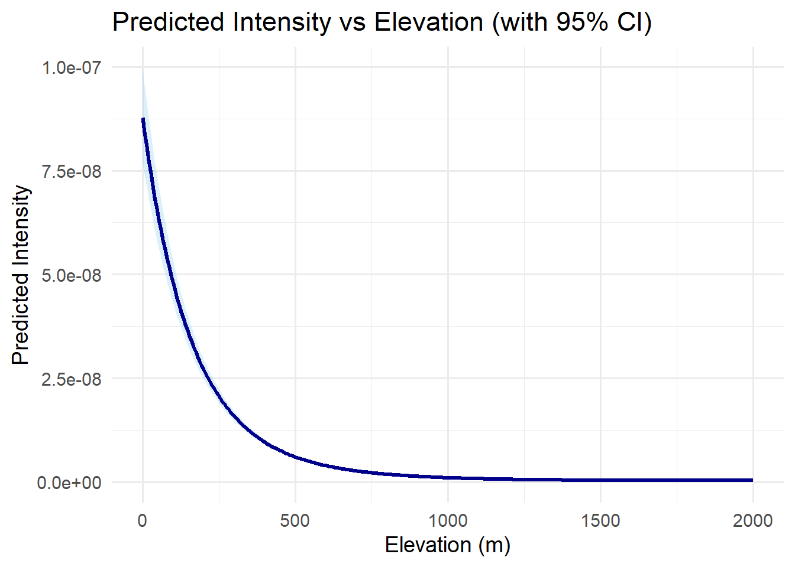

load("data/deer_data.Rdata")
ls()[1] "deer_ppp" "elevation_im" "forest_im" "pop_im" load("data/deer_data.Rdata")
ls()[1] "deer_ppp" "elevation_im" "forest_im" "pop_im" library(sf)Warning: package 'sf' was built under R version 4.4.3Linking to GEOS 3.13.0, GDAL 3.10.1, PROJ 9.5.1; sf_use_s2() is TRUElibrary(spatstat.geom)Warning: package 'spatstat.geom' was built under R version 4.4.3Loading required package: spatstat.dataWarning: package 'spatstat.data' was built under R version 4.4.3Loading required package: spatstat.univarWarning: package 'spatstat.univar' was built under R version 4.4.3spatstat.univar 3.1-2spatstat.geom 3.3-6library(readr)
# win_bc_sf <- st_as_sf(valid_window)
# win_bc <- as.owin(win_bc_sf)
elevation_im <- as.im(elevation_im)
deer_clean <- deer_ppplibrary(spatstat.explore)Warning: package 'spatstat.explore' was built under R version 4.4.3Loading required package: spatstat.randomWarning: package 'spatstat.random' was built under R version 4.4.3spatstat.random 3.3-3Loading required package: nlmespatstat.explore 3.4-2rho_elev <- rhohat(deer_clean, elevation_im)
plot(rho_elev, main = "Intensity of Deer vs Elevation")
The nonparametric estimate of deer intensity as a function of elevation reveals a sharp unimodal pattern, with significantly elevated density at very low elevations (under 300 meters) and rapidly decreasing intensity as elevation increases. This supports the hypothesis that deer occurrences are highly concentrated in lowland regions across British Columbia.
library(spatstat.geom)
library(spatstat.model)Warning: package 'spatstat.model' was built under R version 4.4.3Loading required package: rpartWarning: package 'rpart' was built under R version 4.4.3spatstat.model 3.3-5library(spatstat.explore)
elev_logical_im <- elevation_im
elev_logical_im$v <- !is.na(elevation_im$v)
elev_window <- as.owin(elev_logical_im)
deer_trimmed <- deer_clean[elev_window]
elevation_crop <- as.im(elevation_im, W = elev_window)
dummy_raw <- gridcentres(elev_window, nx = 100, ny = 100)
dummy_ppp <- ppp(x = dummy_raw$x,
y = dummy_raw$y,
window = elev_window)
dummy_df <- as.data.frame(dummy_ppp)
elev_values <- lookup.im(elevation_crop, dummy_df$x, dummy_df$y, naok = TRUE)
dummy_filtered <- dummy_ppp[!is.na(elev_values)]
Q <- quadscheme.logi(
data = deer_trimmed,
dummy = dummy_filtered,
logical = elev_logical_im
)
model_quad <- ppm(Q, ~ elev + I(elev^2),
covariates = list(elev = elevation_crop),
method = "logi")
summary(model_quad)Warning: Some values of the fitted conditional intensity are NAWarning: vcov is not implemented for dummy type 'given' - using 'poisson'
formulaPoint process model
Fitted to data: Q
Fitting method: maximum likelihood (logistic regression approximation)
Model was fitted using glm()
Algorithm converged
Call:
ppm.quad(Q = Q, trend = ~elev + I(elev^2), covariates = list(elev = elevation_crop),
method = "logi")
Edge correction: "border"
[border correction distance r = 0 ]
--------------------------------------------------------------------------------
Quadrature scheme (logistic) = data + dummy
Data pattern:
Planar point pattern: 11002 points
Average intensity 4.94e-09 points per square unit
binary image mask
939 x 1097 pixel array (ny, nx)
pixel size: 1470 by 1470 units
enclosing rectangle: [266204.9, 1878794.9] x [362513.6, 1742843.6] units
(1613000 x 1380000 units)
Window area = 2.22591e+12 square units
Fraction of frame area: 1
Dummy pattern:
(Dummy points given by user)
Planar point pattern: 4303 points
Average intensity 1.93e-09 points per square unit
binary image mask
939 x 1097 pixel array (ny, nx)
pixel size: 1470 by 1470 units
enclosing rectangle: [266204.9, 1878794.9] x [362513.6, 1742843.6] units
(1613000 x 1380000 units)
Window area = 2.22591e+12 square units
Fraction of frame area: 1
--------------------------------------------------------------------------------
FITTED :
Nonstationary Poisson process
---- Intensity: ----
Log intensity: ~elev + I(elev^2)
Model depends on external covariate 'elev'
Covariates provided:
elev: im
Fitted trend coefficients:
(Intercept) elev I(elev^2)
-1.624878e+01 -6.223753e-03 1.754883e-06
Estimate S.E. CI95.lo CI95.hi Ztest
(Intercept) -1.624878e+01 6.464759e-02 -1.637549e+01 -1.612207e+01 ***
elev -6.223753e-03 1.423569e-04 -6.502768e-03 -5.944739e-03 ***
I(elev^2) 1.754883e-06 7.114989e-08 1.615432e-06 1.894334e-06 ***
Zval
(Intercept) -251.34393
elev -43.71936
I(elev^2) 24.66459
----------- gory details -----
Fitted regular parameters (theta):
(Intercept) elev I(elev^2)
-1.624878e+01 -6.223753e-03 1.754883e-06
Fitted exp(theta):
(Intercept) elev I(elev^2)
8.774948e-08 9.937956e-01 1.000002e+00 The fitted inhomogeneous Poisson point process model, incorporating both linear and quadratic terms of elevation, revealed a statistically significant U-shaped relationship. Intensity was minimized at mid-elevations and higher at both low and high elevations. All coefficients were highly significant (p < 0.001), supporting the inclusion of both terms. The model used logistic approximation and achieved convergence despite some missing covariate values at a small fraction of dummy points.
coefs <- coef(model_quad)
beta0 <- coefs["(Intercept)"]
beta1 <- coefs["elev"]
beta2 <- coefs["I(elev^2)"]
elev_seq <- seq(0, 2000, length.out = 200)
intensity <- exp(beta0 + beta1 * elev_seq + beta2 * elev_seq^2)
plot(elev_seq, intensity, type = "l", lwd = 2, col = "blue",
xlab = "Elevation (m)", ylab = "Fitted Intensity",
main = "Fitted Intensity vs Elevation")
The fitted intensity curve reveals a strong negative association between elevation and deer density. Deer are most likely to occur at lower elevations, with intensity decreasing sharply as elevation increases. This pattern suggests that elevation is a key environmental factor influencing the spatial distribution of deer, likely due to habitat preference, food availability, or accessibility at lower altitudes.
library(viridis)Warning: package 'viridis' was built under R version 4.4.3Loading required package: viridisLiteintensity_im <- predict(model_quad, eps = 2000)
plot(intensity_im,
main = "Fitted Intensity Surface over BC",
col = viridis(128),
ribbon = TRUE,
gamma = 0.5,
box = FALSE)
This fitted intensity surface shows that deer density is highest in low-elevation areas along the southern coast and river valleys of British Columbia. The intensity gradually declines across the province as elevation increases, particularly in mountainous interior regions. The spatial pattern supports the model’s inference that deer occurrences are concentrated in accessible, lowland environments.
library(ggplot2)
coefs <- coef(model_quad)
vcov_mat <- vcov(model_quad)Warning: Some values of the fitted conditional intensity are NAWarning: vcov is not implemented for dummy type 'given' - using 'poisson'
formulaelev_seq <- seq(0, 2000, length.out = 300)
X <- cbind(1, elev_seq, elev_seq^2)
log_lambda_hat <- as.vector(X %*% coefs)
se_log_lambda <- sqrt(rowSums((X %*% vcov_mat) * X))
fitted <- exp(log_lambda_hat)
upper <- exp(log_lambda_hat + 2 * se_log_lambda)
lower <- exp(log_lambda_hat - 2 * se_log_lambda)
df <- data.frame(
Elevation = elev_seq,
Intensity = fitted,
Lower = lower,
Upper = upper
)
ggplot(df, aes(x = Elevation, y = Intensity)) +
geom_ribbon(aes(ymin = Lower, ymax = Upper), fill = "skyblue", alpha = 0.3) +
geom_line(color = "darkblue", size = 1.2) +
labs(
title = "Predicted Intensity vs Elevation (with 95% CI)",
x = "Elevation (m)",
y = "Predicted Intensity"
) +
coord_cartesian(ylim = c(0, max(upper))) +
theme_minimal(base_size = 14)Warning: Using `size` aesthetic for lines was deprecated in ggplot2 3.4.0.
ℹ Please use `linewidth` instead.
The fitted intensity curve shows a steep decline with increasing elevation. Deer occurrences are most likely at lower elevations, with intensity dropping rapidly as elevation rises. Above approximately 1000 meters, the predicted intensity becomes very low and stable, suggesting that deer are largely concentrated in lower-altitude regions across British Columbia. The narrow confidence band at low elevations also indicates high certainty in this pattern.